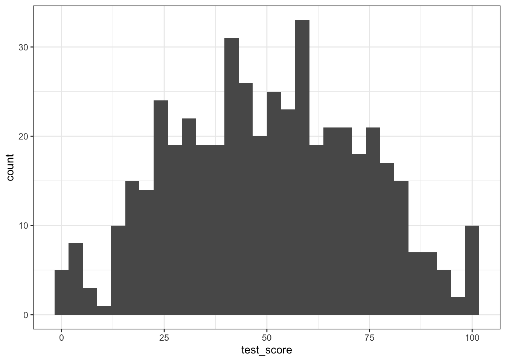
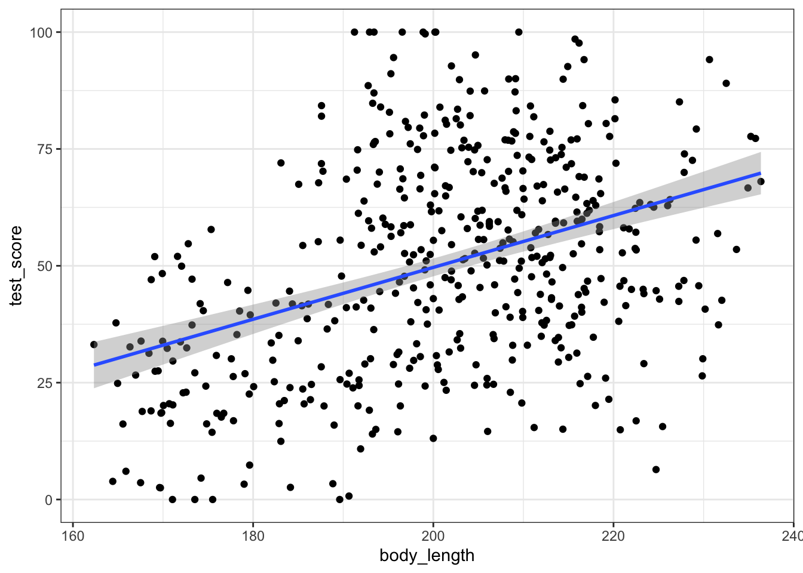
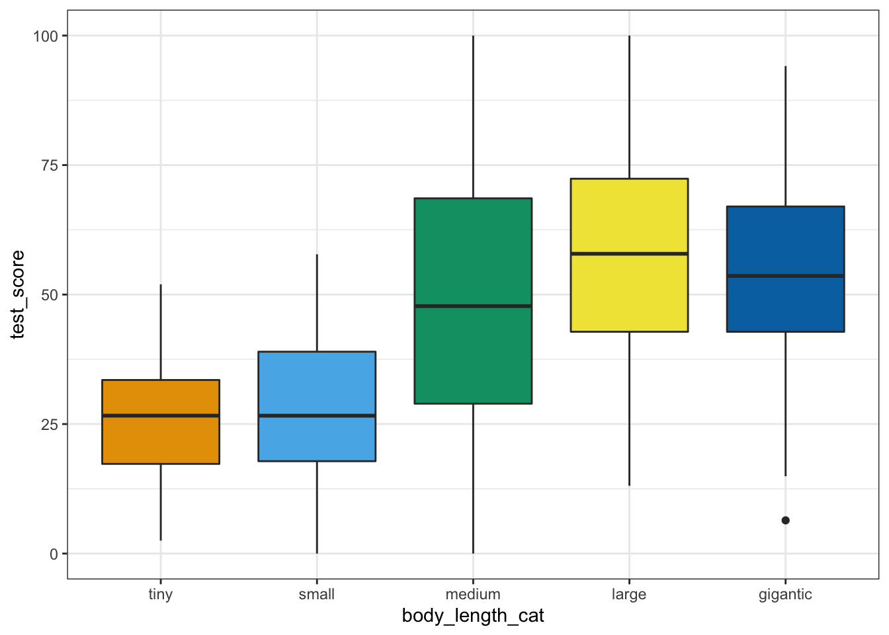
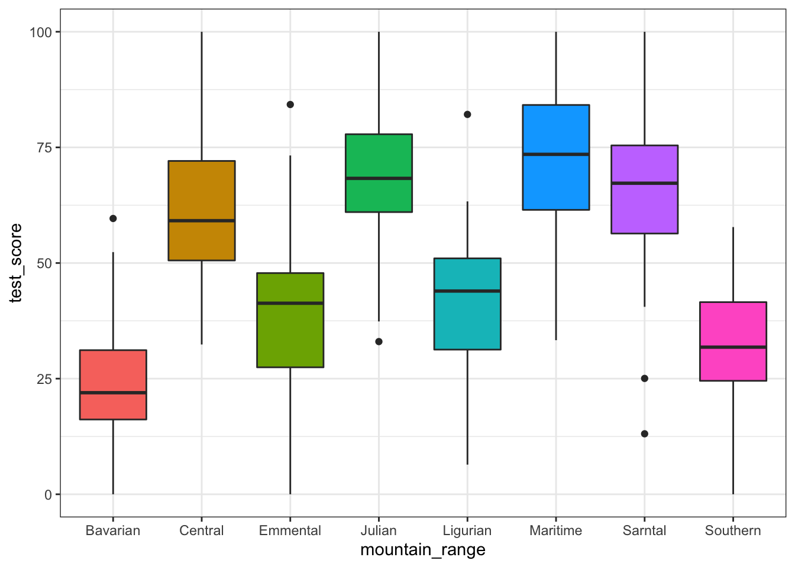
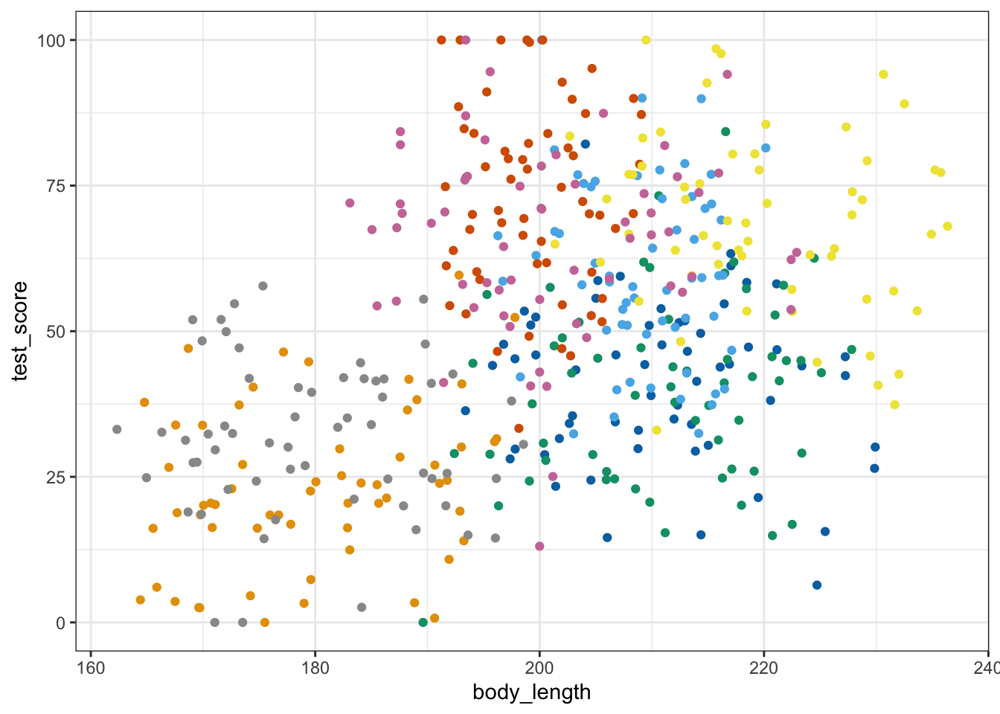
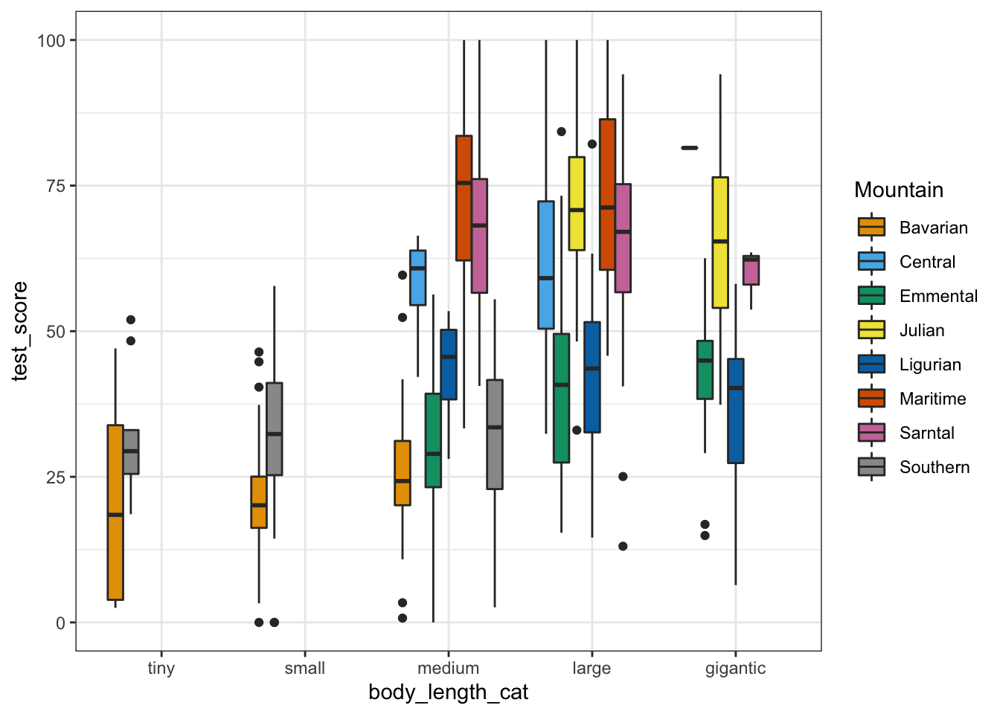
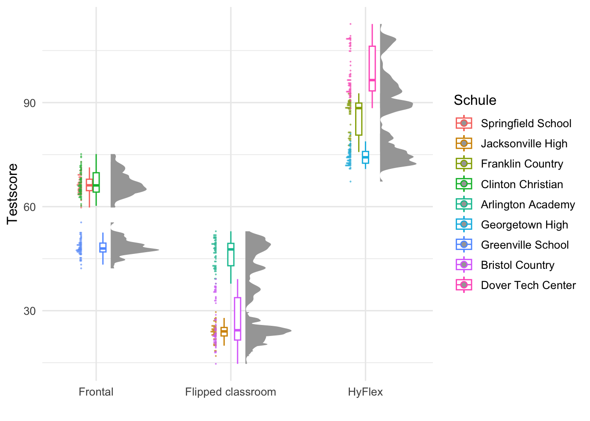

25 Lineare gemische Modelle
Dieses Kapitel basiert auf dem tollen Tutorium von Gabriela K Hajduk. Die Daten wurden von mir angepasst und teilweise gekürzt.
25.1 Genutzte R Pakete für das Kapitel
Wir wollen folgende R Pakete in diesem Kapitel nutzen.
pacman::p_load(tidyverse, magrittr, conflicted, broom, see,
multcomp, emmeans, ggpubr, lme4, broom.mixed)
conflict_prefer("select", "dplyr")
conflict_prefer("filter", "dplyr")Am Ende des Kapitels findest du nochmal den gesamten R Code in einem Rutsch zum selber durchführen oder aber kopieren.
dragons_tbl <- read.csv2("data/dragons.csv")ggplot(dragons_tbl, aes(test_score)) +
geom_histogram() +
theme_bw() `stat_bin()` using `bins = 30`. Pick better value with `binwidth`.
Call:
lm(formula = test_score ~ body_length, data = dragons_tbl)
Residuals:
Min 1Q Median 3Q Max
-56.9622 -16.4087 -0.7789 15.1902 55.1992
Coefficients:
Estimate Std. Error t value Pr(>|t|)
(Intercept) -61.317343 12.066992 -5.0814 0.0000005383 ***
body_length 0.554866 0.059747 9.2869 < 0.00000000000000022 ***
---
Signif. codes: 0 '***' 0.001 '**' 0.01 '*' 0.05 '.' 0.1 ' ' 1
Residual standard error: 21.2 on 478 degrees of freedom
Multiple R-squared: 0.15285, Adjusted R-squared: 0.15108
F-statistic: 86.246 on 1 and 478 DF, p-value: < 0.000000000000000222ggplot(dragons_tbl, aes(x = body_length, y = test_score)) +
geom_point() +
geom_smooth(method = "lm") +
theme_bw() +
scale_color_okabeito()`geom_smooth()` using formula 'y ~ x'
augment(lm_fit) %>%
ggplot(aes(x = .fitted, y = .resid)) +
geom_point() +
geom_hline(yintercept = 0, color = "red") +
theme_bw() +
scale_color_okabeito()
ggplot(dragons_tbl, aes(sample = test_score)) +
stat_qq() + stat_qq_line(color = "red") +
theme_bw() +
scale_color_okabeito()
ggplot(dragons_tbl, aes(mountain_range, test_score, fill = mountain_range)) +
geom_boxplot() +
theme_bw() +
theme(legend.position = "none") +
scale_fill_okabeito()
ggplot(dragons_tbl, aes(x = body_length, y = test_score, colour = mountain_range)) +
geom_point() +
theme_bw() +
theme(legend.position = "none") +
scale_color_okabeito()
ggplot(dragons_tbl, aes(body_length, test_score, color = mountain_range)) +
theme_bw() +
geom_point() +
facet_wrap(~ mountain_range) +
scale_color_okabeito()
lm_mountain_fit <- lm(test_score ~ body_length + mountain_range, data = dragons_tbl)
summary(lm_mountain_fit)
Call:
lm(formula = test_score ~ body_length + mountain_range, data = dragons_tbl)
Residuals:
Min 1Q Median 3Q Max
-52.2637 -9.9260 0.3632 9.9925 44.4853
Coefficients:
Estimate Std. Error t value Pr(>|t|)
(Intercept) 20.836993 14.472341 1.4398 0.150594
body_length 0.012637 0.079737 0.1585 0.874140
mountain_rangeCentral 36.584313 3.599297 10.1643 < 0.00000000000000022 ***
mountain_rangeEmmental 16.210697 3.696654 4.3852 0.000014304 ***
mountain_rangeJulian 45.116050 4.190138 10.7672 < 0.00000000000000022 ***
mountain_rangeLigurian 17.749292 3.673663 4.8315 0.000001836 ***
mountain_rangeMaritime 49.881892 3.139254 15.8897 < 0.00000000000000022 ***
mountain_rangeSarntal 41.979270 3.197172 13.1301 < 0.00000000000000022 ***
mountain_rangeSouthern 8.519476 2.731277 3.1192 0.001924 **
---
Signif. codes: 0 '***' 0.001 '**' 0.01 '*' 0.05 '.' 0.1 ' ' 1
Residual standard error: 14.96 on 471 degrees of freedom
Multiple R-squared: 0.58433, Adjusted R-squared: 0.57727
F-statistic: 82.763 on 8 and 471 DF, p-value: < 0.000000000000000222lmer_1_fit <- lmer(test_score ~ body_length + (1 | mountain_range), data = dragons_tbl)
summary(lmer_1_fit)Linear mixed model fit by REML ['lmerMod']
Formula: test_score ~ body_length + (1 | mountain_range)
Data: dragons_tbl
REML criterion at convergence: 3991.2
Scaled residuals:
Min 1Q Median 3Q Max
-3.48160 -0.65140 0.00660 0.66872 2.95807
Random effects:
Groups Name Variance Std.Dev.
mountain_range (Intercept) 339.68 18.43
Residual 223.81 14.96
Number of obs: 480, groups: mountain_range, 8
Fixed effects:
Estimate Std. Error t value
(Intercept) 43.716559 17.135092 2.5513
body_length 0.033130 0.078648 0.4213
Correlation of Fixed Effects:
(Intr)
body_length -0.924augment(lmer_1_fit) %>%
ggplot(aes(x = .fitted, y = .resid)) +
geom_point() +
geom_hline(yintercept = 0, color = "red") +
theme_bw() +
scale_color_okabeito()
lmer_2_fit <- lmer(test_score ~ body_length + (1|mountain_range) + (1|mountain_range/site), data = dragons_tbl) Warning in checkConv(attr(opt, "derivs"), opt$par, ctrl = control$checkConv, :
unable to evaluate scaled gradientWarning in checkConv(attr(opt, "derivs"), opt$par, ctrl = control$checkConv, :
Model failed to converge: degenerate Hessian with 1 negative eigenvaluessummary(lmer_2_fit)Linear mixed model fit by REML ['lmerMod']
Formula:
test_score ~ body_length + (1 | mountain_range) + (1 | mountain_range/site)
Data: dragons_tbl
REML criterion at convergence: 3976
Scaled residuals:
Min 1Q Median 3Q Max
-3.24260 -0.67514 -0.01157 0.69753 2.88103
Random effects:
Groups Name Variance Std.Dev.
site.mountain_range (Intercept) 23.089 4.8051
mountain_range (Intercept) 119.456 10.9296
mountain_range.1 (Intercept) 208.127 14.4266
Residual 208.580 14.4423
Number of obs: 480, groups: site:mountain_range, 24; mountain_range, 8
Fixed effects:
Estimate Std. Error t value
(Intercept) 40.083611 21.863838 1.8333
body_length 0.051176 0.103683 0.4936
Correlation of Fixed Effects:
(Intr)
body_length -0.955
optimizer (nloptwrap) convergence code: 0 (OK)
unable to evaluate scaled gradient
Model failed to converge: degenerate Hessian with 1 negative eigenvalues